Press → to begin · Electronic Literature Organization
ELO 2026
TOWN HALL
Super (Un)Supervised World
A year of electronic literature, played as a side-scroller. Use ← → to travel, or the buttons below.
? The Board — Player Select
The people steering the ELO this year.
- PresidentAnastasia Salter
- TreasurerDene Grigar
- SecretaryDavin Heckman
- Dir. of CommunicationMark C. Marino
- ELO CoordinatorPD Edgar
Board of Directors & committees
- Lyle Skains
- Zach Whalen
- Rui Torres
- Astrid Ensslin
- Lai-Tze Fan
- Caitlin Fisher
- Erika Fülöp
- Reham Hosny
- Claudia Kozak
- Jason Nelson
- Alex Saum-Pascual
- Shanmugapriya T
- Joseph Tabbi
Treasurer’s Report
Presented by Dene Grigar, Treasurer
The Treasurer’s report covers the ELO’s current financial health, membership, and the coins we’ve banked toward this year’s programs and next year’s adventure.
The organization enters 2026 with an estimated 300 members worldwide.
Powered by Membership
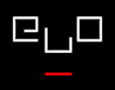
Every ELO project and conference — the collections, the series, the archives, and gatherings like this one — can only be supported by membership. If the ELO’s work matters to you, please join or renew.
Projects & Partners of the ELO
Warp pipes to the worlds the ELO builds and sustains — the collections, series, and sessions keeping electronic literature alive. Keep pressing →.
- ELC5
- Bloomsbury Series
- MLA
- The NEXT
- CELL & ELD
? ELC5 — The Fifth Collection
The Electronic Literature Collection, Volume 5 is underway. The editorial retreat was hosted at UCF, with the collection’s launch anticipated in 2027.
Editorial collective:
- Dan Cox
- Élika Ortega
- Dani Spinosa
- Zach Whalen
Bloomsbury “Electronic Literature” Series
Series editors: Astrid Ensslin · Helen J. Burgess · María Mencía · Alex Saum-Pascual · Rui Torres — every volume also released Open Access.
-
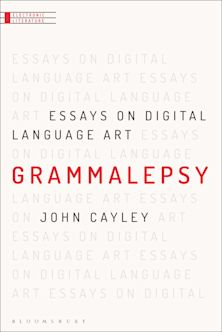
-
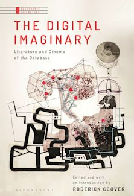
-
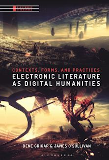
-
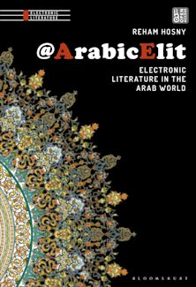
-
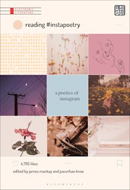
MLA 2026 — Sponsored by the ELO
Distant Coding for the Digital Humanities
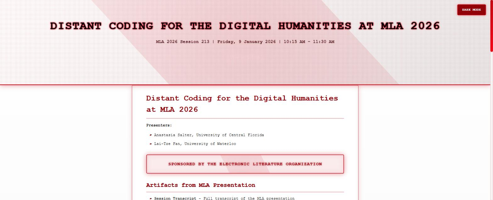
Session 213 · Fri Jan 9 · 10:15–11:30 AM
Anastasia Salter & Lai-Tze Fan
Open Source Humanities in the Age of AI
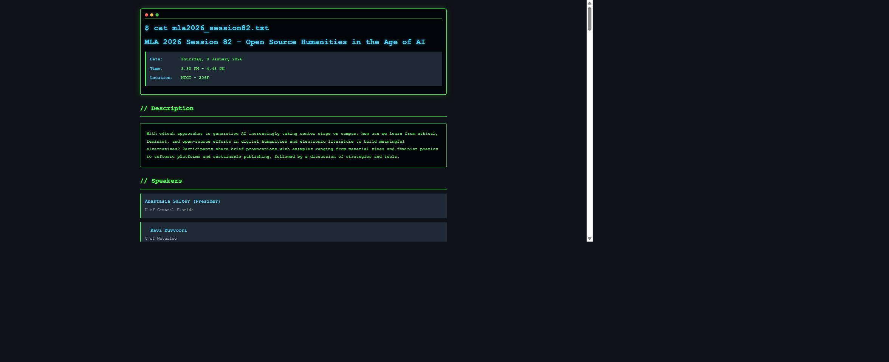
Session 82 · Thu Jan 8 · 3:30–4:45 PM · MTCC 206F
Organized by Anastasia Salter & Lai-Tze Fan
MLA 2027 — Upcoming
Critical Coding: AI, Agency, and the Literary Imagination
Organized by Mark Marino & Alex Saum-Pascual.
Coming to the 2027 MLA Convention in Los Angeles.
the NEXT — Museum of the Born-Digital
The NEXT preserves over 3,000 works across 30+ collections of born-digital art and literature, run through the Electronic Literature Lab at WSU Vancouver.
This year’s featured exhibit: Talan Memmott — Works on Screen, 1998–2016, curated by Dene Grigar (March 3 – July 27, 2026).
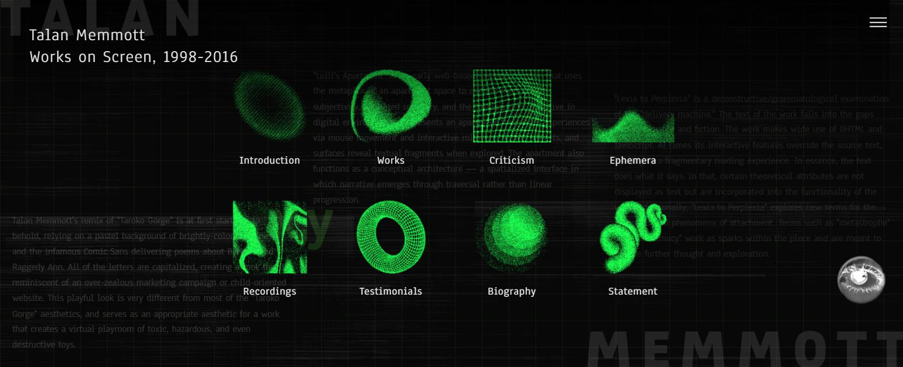
CELL & the ELD — Finding the Field
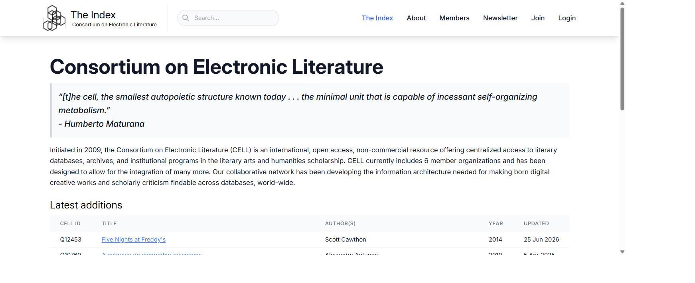
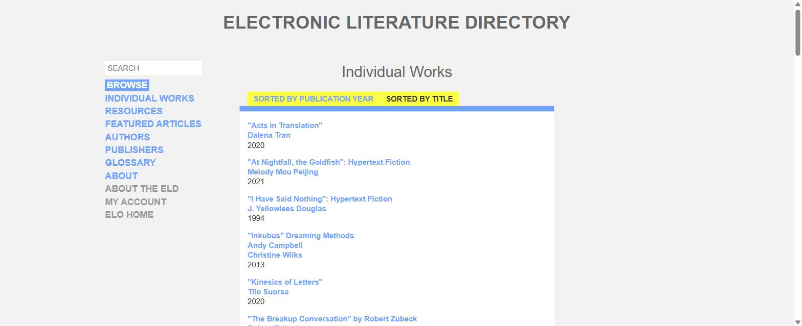
Conferences — The ELOrlando Trilogy
This Town Hall concludes a three-conference run hosted from Orlando. The first two chapters:
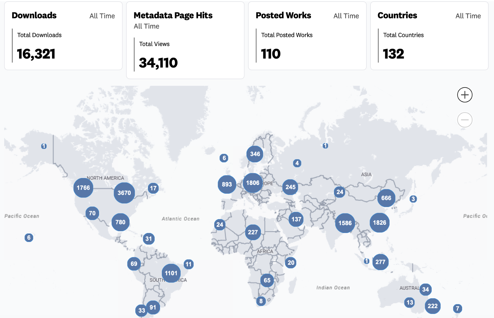
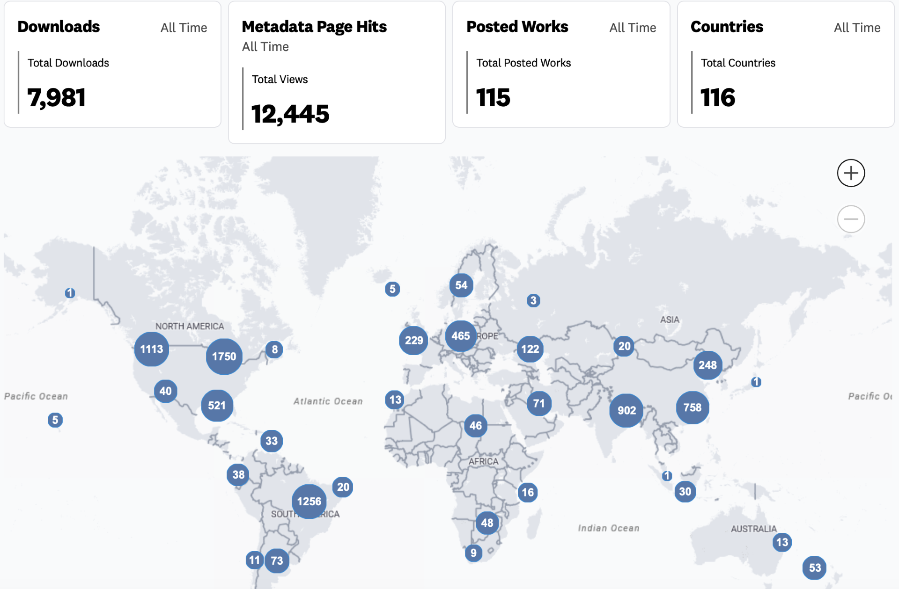
ELO 2026 — The Final Chapter

ELO 2026 (un)supervised — the third and final ELOrlando chapter — welcomed 250 registrants, and our open-access repository is almost complete: a 268-page proceedings, a 48-work exhibition, and the full program on STARS. Please share and use it!
Thank You — Conference Committee
The team that built ELO 2026 (un)supervised.
- Co-ChairAnastasia Salter
- Co-ChairJohn Murray
- Exhibition Co-ChairLyle Skains
- Exhibition Co-ChairDaniel Cox
- Web ChairMike Shier
- Logistics ChairPD Edgar
- Proceedings ChairJack Murray
- Exhibitions TeamAlyssa Barrack
- Exhibitions TeamRicky Finch
- CommitteeEmily Johnson
- CommitteeMel Stanfill
Thank You — Artistic & Scientific Committee
The jurors and reviewers who shaped the exhibition and the program.
- Alex Saum-Pascual
- Alia Hall
- Alyssa Barrack
- Anastasia Salter
- Anne Sullivan
- Anyssa Gonzalez
- Astrid Ensslin
- Christina Restrepo Nazar
- Claudia Kozak
- Dan Cox
- Daniel Heslep
- Deena Larsen
- Dene Grigar
- Élika Ortega
- Emery Beckman
- Emily K. Johnson
- Farrah Cato
- Glenn S. Ritchey III
- J.M.L. Whittington
- Jack Murray
- Jason Nelson
- John T. Murray
- Kathi Inman Berens
- Kirk M. Lundblade
- LJ Connolly
- Lyle Skains
- Mark C. Marino
- Mel Stanfill
- Mez Breeze
- Mike Shier
- Mirek Stolee
- Nikki Barnes
- PB Berge
- P.D. Edgar
- Ricky Finch
- Samya Brata Roy
- Shanmugapriya T
- Stuart Moulthrop
- Vee Kennedy
- Yingzi Kong
- Zach Whalen
Thank You — Video Team & Moderators
Moderators & Video Team coordinated by Mike Shier
Video Team
- Mónica Gonzalez Burgos · Chair
- Frederic Caeyers
- LJ Connolly
- Tyler Gillis
- Christina Restrepo Nazar
- J.M.L. Whittington
Moderators
- Vee Kennedy
- Emery Beckman
- Emilie Buckley
- Daniel Heslep
- Alyssa Barrack
- Favour Boluwade
- Kirk Lundblade
- Matthew Bryan
- P.D. Edgar
- Glenn S. Ritchey III
- Mark C. Marino
- Zach Whalen
- Reliance Enwerem
With Thanks to Our Sponsors
-
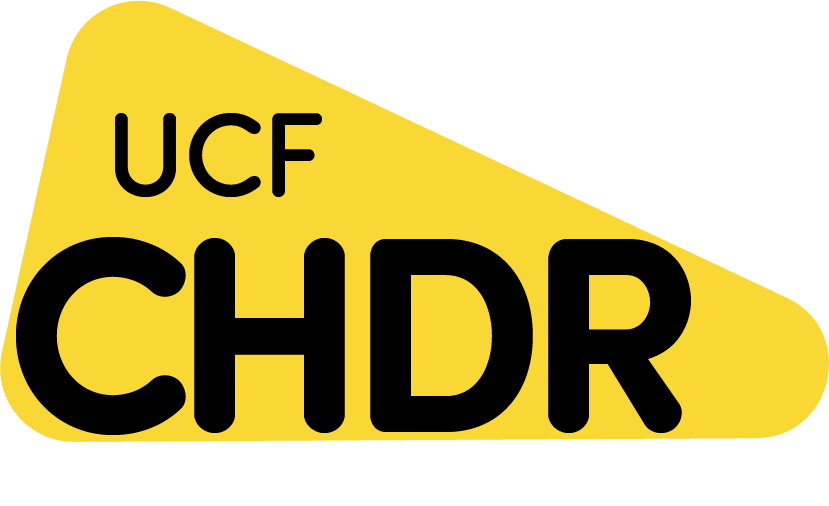
- University of Central Florida College of Arts & Humanities
-
University of Central Florida
Texts & Technology
Ph.D. Program
The sponsorship of these organizations is what makes it possible to run this conference free of charge — as a membership drive for the ELO. Thank you for helping keep electronic literature open to everyone.
World 2-0 · The next adventure
ELO 2027
Universidad del Norte
Barranquilla, Colombia
The ELO is heading to South America! Our 2027 conference will be hosted by Universidad del Norte.
- María Cecilia ReyesUniversidad del Norte
- Jaime RodríguezUniversidad de los Andes
- Nelson VeraUniversidad de los Andes
- Mauricio VásquezEAFIT
And there’s more…
We have more exciting conferences already in the works, and we look forward to sharing the details with you soon. Watch this warp zone.
? Q&A — Your Turn, Player 2
- What would you like to see next from the ELO?
- How do you feel about income-based membership?
- What do you wish we were thinking about or doing?
Unmute, raise a hand, or drop it in the chat.
THANK YOU
for playing the ELO 2026 Town Hall
See you in Barranquilla. ← to replay any level.